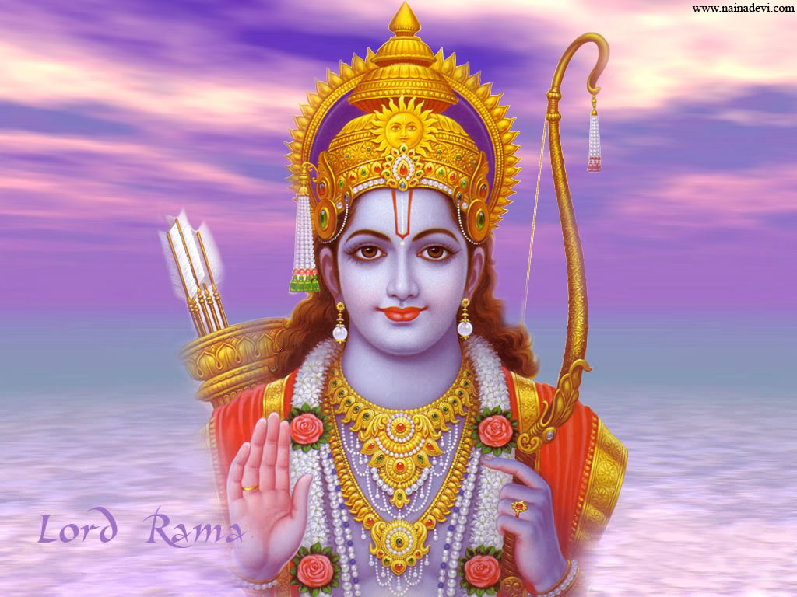

Lord Shree Ram
Who is Rama?
Rama is one of the most widely worshipped Hindu deities, the embodiment of chivalry and virtue. The name is specifically associated with Ramachandra, the seventh incarnation (avatar) of Vishnu. His story is told in the epic poems the Mahabharata and the Ramayana.
10 Lines on Ram
- Maryada Purushottam Shri Rama was the seventh incarnation of Vishnu.
- Lord Rama is counted among the greatest gods of Hinduism.
- Lord Rama is counted among the greatest gods of Hinduism.
- Lord Rama is counted among the greatest gods of Hinduism.
- Lord Rama is counted among the greatest gods of Hinduism.
- Sita was the wife of Lord Shri Ram.
- He received his education from Guru Vashistha.
- He was very simple-minded, highly great, generous, well-mannered, and fearless.
- Shri Rama killed many demons.
- He killed Maha Balashali Lankapati Ravana